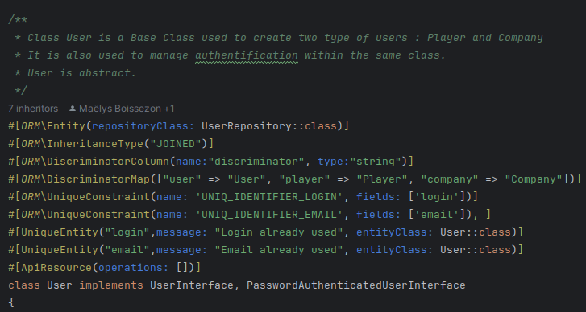
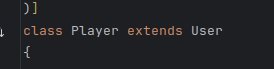
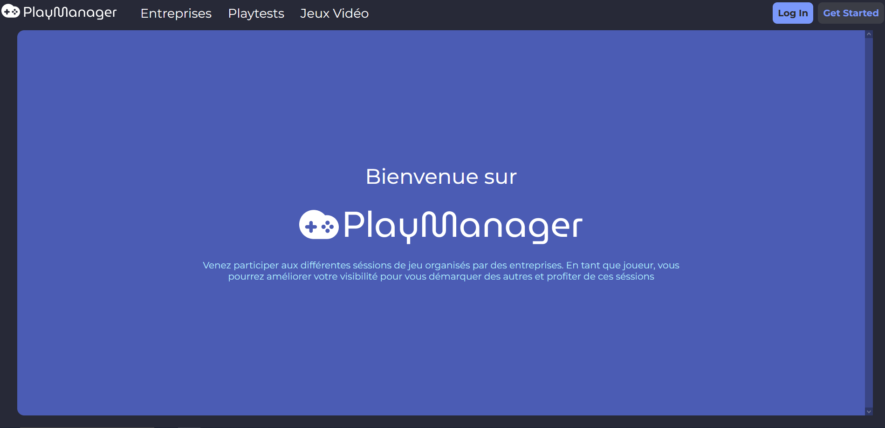

Pour chaque apprentissage critique, vous trouverez chaque projet qui démontre mon niveau
avec un texte descriptif et les traces.
De plus, à la fin de chaque page projet se trouve le détail de chaque compétence utilisée pour celui-ci.
Le niveau actuel suivra l'échelle suivante : Non-Acquise -> En cours d'acquisition -> Acquise -> Maîtrisée
AC1: Choisir et implémenter les architectures adaptées
Niveau : Acquis
Grâce au projet web de cette année, j’ai appris à mettre
en place une API REST et des architectures adaptées dans une application web. En effet, l’API REST demande à
avoir une architecture spécifique et le projet nous a aussi demandé de réfléchir à la façon dont notre base
de données est conçue. Par exemple, nous avions dû mettre en place deux types d’utilisateurs (entreprise et
participant). Tandis que la plupart des groupes avaient décidé de mettre un paramètre vrai ou faux en fonction
du type de compte, nous avions choisi de faire de l’héritage en utilisant Symfony. Il y a donc une entité
"mère" User qui contient les attributs utiles pour la connexion et deux autres qui héritent de celle-ci avec
des attributs personnalisés.


Compétence Essentielle liée : 1.01 - en respectant les besoins décrits par le
client
Lors de mon alternance, j’ai dû implémenter un POC (Proof Of
Concept) qui m’a demandé de tester plusieurs architectures pour pouvoir abstraire une fonctionnalité. En
effet, durant mon stage, l’application ne permettait d’annoter que des objets 3D, désormais, elle permet aussi
d’annoter des PDF, des vidéos, des images et autres... Pour cela, j’ai utilisé encore une fois l’héritage
mais aussi des structures de données complexes afin d’enregistrer les dessins effectués dans un fichier
JSON.
Je ne peux pas fournir de trace car cela est confidentiel.
AC2: Faire évoluer une application existante
Niveau : En cours d'acquisition
Compétence Essentielle liée : 1.04 - en veillant à la qualité du code et à sa
documentation
Lors de mon alternance, j’ai pu maintenir et aider au
développement de l’application web et plateforme propriétaire de l’entreprise. Cette expérience m’a permis
de comprendre comment une application évoluait et comment m’insérer dans ce processus-là. Cela m’a aussi
forcé à faire attention à la qualité de mon code qui était relu et commenté. De plus, l’application sur
laquelle je travaille actuellement a pour but de s’insérer dans cette plateforme, ce qui me permet de la
faire évoluer.
Je ne peux pas fournir de trace car cela est confidentiel.
AC3: Intégrer des solutions dans un environnement de production
Niveau : En cours d'acquisition
Travaux Dirigés de Virtualisation
Compétence Essentielle liée : 1.06 - en choisissant les ressources techniques
appropriées
Lors des travaux dirigés du semestre 5, nous nous sommes concentrés sur le déploiement de solutions et
d’applications web dans deux catégories d’environnements : développement et production. Pour cela, nous
avons utilisé et implémenté des images Docker qui permettent d’utiliser des serveurs (web, bases de
données, tests, etc.) sans pour autant être connecté à un réseau internet. Cette solution m’a été utile car
je l’utilise aussi pour mon alternance.
Compétence Essentielle liée : 1.04 - en veillant à la qualité du code et à sa
documentation
Lors de ce projet, j’ai appris à mettre en ligne deux sites web interconnectés : celui qui hébergeait l’API
et celui de l’interface qui communiquait avec le premier. Par exemple, pour le site créé en Vue.JS, j'ai
utilisé la commande "npm run build". Cette expérience a été complexe car nous avons rencontré certains
problèmes que l’on ne pouvait pas vraiment expliquer. D’ailleurs, le déploiement du troisième site n’a pas
fonctionné, et à ce jour, je n’ai toujours pas l’explication.

AC1: Anticiper les résultats de diverses métriques (temps d’exécution, occupation mémoire, montée en
charge...)
Niveau : Acquis
Travaux dirigés - Qualité Algorithmique
Compétences Essentielles liées : 2.01 -en formalisant et modélisant des situations complexes,
2.02 - en recensant les algorithmes et les structures de données usuels
Lors des travaux dirigés du cours de qualité algorithmique, je me suis exercé à
anticiper les résultats de temps d’exécution et d’occupation mémoire via des exercices. Nous nous sommes
entraînés sur des algorithmes de backtracking et des algorithmes de programmation dynamique de plus en plus
optimisés. Cette anticipation s’est faite avant de développer les algorithmes et j’ai pu confirmer mes
résultats après les avoir implémentés.
AC2: Profiler, analyser et justifier le comportement d’un code existant
Niveau : En cours d'acquisition
Compétences Essentielles liées : 2.04 - en justifiant les choix et validant les résultats
Lors de mon alternance, j’ai dû m’acclimater au code de la plateforme propriétaire de
l’entreprise qui est en développement constant depuis 10 ans. Cette acclimatation a été très longue et
difficile car le code n’est pas toujours bien décrit (il n’y a pas toujours de documentation) et j’ai donc
dû être aidé des différents employés de l’entreprise qui connaissent bien son architecture.
Je ne peux pas fournir de trace car cela est confidentiel.
AC3: Choisir et utiliser des bibliothèques et méthodes dédiées au domaine d'application (imagerie,
immersion, intelligence artificielle, jeux vidéos, parallélisme, calcul formel...)
Niveau : Acquis
Travaux dirigés - Programmation Multimédia
Lors de ce cours, nous avons développé et appris à utiliser la bibliothèque de
graphismes WebGL qui utilise le langage Javascript. Nous avons également utilisé les méthodes mathématiques
telles que le calcul matriciel que nous avons appris en cours de Modélisation Mathématiques afin de calculer
la direction d’un objet, les collisions entre deux objets, la rotation et tout autre type de transformation
mathématique sur un objet. Pour mettre en œuvre ces apprentissages, j’ai développé lors du dernier travail
dirigé, un jeu casse-brique.
Compétences Essentielles liées : 2.03 - en s’appuyant sur des schémas de raisonnement
Lors du stage, j’ai dû utiliser la bibliothèque de canevas Javascript : FabricJS afin de
pouvoir implémenter plus facilement des fonctionnalités liées au dessin sur canevas. J’ai aussi fait le
choix
d’utiliser la bibliothèque Bézier.js qui m’a aidé lors de l’implémentation des algorithmes de calcul de
courbes de Bézier comme l’algorithme de De Casteljau.
Travaux dirigés - Qualité algorithmique
Compétences Essentielles liées : 2.03 - en s’appuyant sur des schémas de raisonnement
Lors des travaux dirigés, j’ai dû réfléchir à quels algorithmes de programmation
(backtracking ou programmation dynamique) en fonction du problème posé. Par exemple, pour un problème tel
que le sudoku, j’ai dû utiliser le backtracking alors que pour le problème de la découpe de planche j’ai dû
utiliser la programmation dynamique.
AC1: Organiser et partager une veille technologique et informationnelle
Niveau : Acquis
Travaux Dirigés de Communication
Compétence Essentielle liée : 6.01 - en inscrivant sa démarche au sein d’une équipe
pluridisciplinaire
Lors des travaux dirigés et tout au long du premier semestre de troisième année, en
équipe de 4, nous avons fait une veille informationnelle sur trois thèmes différents : l’impact de l’IA dans
l’Art, la pollution numérique et les failles informatiques et leurs impacts. Pour organiser la veille, nous
avons utilisé Notion (image 1), pour suivre les nouvelles informations, nous avons utilisé Feedly (image 2)
et pour rendre compte de la veille, j'ai fait plusieurs posts sur Linkedin.
AC2: Identifier les enjeux de l’économie de l’innovation numérique
Niveau : En cours d'acquisition
Travaux dirigés d'économie
Lors des différents travaux dirigés du cours d'économie, nous avons exploré les enjeux
sociaux et environnementaux de l'économie de l'innovation numérique. Le dernier rendu de ce cours a été une
réflexion complète sur l'écoconception des services numériques et des sites web. Cette réflexion m'a permise
d'en apprendre plus sur quels langages et quelles façons de traiter les données étaient bénéfiques pour
l'environnement.
MOOC : Impacts Environnementaux du numérique
Lors de ce MOOC, j'ai pu approfondir mes connaissances sur les impacts du numérique et
de son économie sur l’environnement.
AC3: Guider la conduite du changement informatique au sein d’une organisation
Niveau : En cours d'acquisition
Travaux Dirigés de Communication
Compétence Essentielle liée : 6.01 - en inscrivant sa démarche au sein d’une équipe
pluridisciplinaire
Lors des travaux dirigés de communication, j'ai appris à faire un changement au sein
d'une application via l'implémentation d'un OnBoarding sur l'application Correlate. Pour présenter cet
onboarding, nous avons regroupé les fonctionnalités principales, créé des personas et user stories, fait un
rapport et une maquette Figma qui représente l'onboarding de l'application. Pour créer cette maquette, nous
nous sommes inspirés de l'onboarding de l'application Notion.
AC4: Accompagner le management de projet informatique
Niveau : En cours d'acquisition
SAE Site de Gestion de Stage et Alternance : voir le projet
Compétences Essentielles liées : 6.01 - en inscrivant sa démarche au sein d’une équipe
pluridisciplinaire, 6.03 - en veillant au respect des contraintes juridiques, 6.04 - en développant une
communication efficace et collaborative
Lors de ce projet, j'ai pu endosser le rôle de Product Owner. Cela m'a permis de
comprendre comment était géré un projet (gestion des sprints via Miro, création de user stories) et de
comprendre comment la communication avec un client était effectuée (négociation des demandes du client).